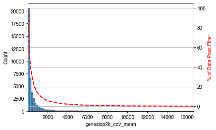

gene_meta_path='../../data/genome/gencode.vM22.annotation.gene.flat.tsv.gz'chrom_to_remove=['chrM']# change this to the path to your filtered metadatametadata_path='../step_by_step/100kb/CellMetadata.PassQC.csv.gz'# change this to the paths to your MCDS filesmcds_path='../../data/Brain/snmC-seq2/Liu2021Nature.mcds/',obs_dim='cell'var_dim='geneslop2k'min_cov=5
genes_to_skip=set()# skip smaller genes mostly covered by a larger gene, e.g., a miRNA within a protein coding gene.# F=0.9 means > 90% of gene_b is overlapped with gene_a, in this case, we only keep gene_a for DMG testgene_bed=pybedtools.BedTool.from_dataframe(gene_meta.reset_index()[['chrom','start','end','gene_id']])mapped_bam=gene_bed.map(b=gene_bed,c=4,o='distinct',F=0.9)for_,(*_,gene_a,gene_b_str)inmapped_bam.to_dataframe().iterrows():forgene_bingene_b_str.split(','):ifgene_b!=gene_a:genes_to_skip.add(gene_b)# remove certain chromosomesgenes_to_skip|=set(gene_meta.index[gene_meta['chrom'].isin(chrom_to_remove)])use_features=gene_meta.index[~gene_meta.index.isin(genes_to_skip)]print(f'{use_features.size} features remained')
mcds=MCDS.open(mcds_path,var_dim=var_dim,use_obs=metadata.index).sel({var_dim:use_features})mcds.add_feature_cov_mean()feature_cov_mean=mcds.coords[f'{var_dim}_cov_mean'].to_pandas()use_features&=feature_cov_mean[feature_cov_mean>min_cov].indexprint(f'{use_features.size} features remained')
Feature geneslop2k mean cov across cells added in MCDS.coords['geneslop2k_cov_mean'].
/tmp/ipykernel_166231/2001998121.py:7: FutureWarning: Index.__and__ operating as a set operation is deprecated, in the future this will be a logical operation matching Series.__and__. Use index.intersection(other) instead
use_features &= feature_cov_mean[feature_cov_mean > min_cov].index
40331 features remained

mcds.filter_feature_by_cov_mean(min_cov=min_cov)
Before cov mean filter: 41871 geneslop2k
After cov mean filter: 40331 geneslop2k 96.3%
/home/hanliu/miniconda3/envs/allcools_new/lib/python3.8/site-packages/dask/core.py:119: RuntimeWarning: invalid value encountered in true_divide
return func(*(_execute_task(a, cache) for a in args))
PosixPath('geneslop2k_frac.mcds')
Save gene metadata together with gene fraction files¶